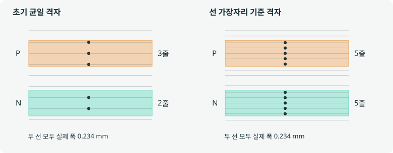

Sdd11 / 차동 반사
보낸 신호 일부가 되돌아온다.
임피던스가 달라지는 곳에서 신호 일부가 차동 형태로 입력 쪽에 돌아오는 것입니다.
입력 쪽 · 1불연속 지점출력 쪽 · 2
→ 전달되는 차동 신호← 돌아오는 차동 신호
돌아오는 성분이 작을수록 차동 반사가 작습니다.
설계 기록 · 2026.09.10
등길이 → 형상 정리 → 남은 길이 차이 축소.
실제 배선에서 무엇을 얻고, 무엇을 양보했는지 비교합니다.
배선 형상을 정리하고 길이 차이를 줄이면, 반사와 공통모드 변환도 함께 줄어들까?
01 / 실제 CAD 비교
Molex 5핀 측정 어댑터 · 66 × 40 mm
3D 선로를 불러오는 중입니다.
각 커밋의 실제 신호선·패드·비아입니다. 기준면·실드 비아 버튼을 누르면 계산에 포함한 귀환 경로도 볼 수 있습니다. 반투명 외형은 위치 안내용이며 커넥터 몸체는 생략했습니다.
여기서 mm는 PCB 선분 중심선의 길이 차이입니다. 커넥터 내부 지연까지 포함한 시간 skew 실측값은 아닙니다.
02 / 세 안의 설계 수치
위 3D와 같은 01·02·03안입니다. 열 제목을 누르면 3D의 선택도 바뀝니다. 강조된 열은 선택한 안이며, 작은 그림의 점선은 B.Cu 배선입니다.
표를 좌우로 밀어 세 안을 비교할 수 있습니다.
| 항목 | |||
|---|---|---|---|
| A 길이 차이 | < 0.001 mm | 1.388 mm | 0.792 mm |
| A P / N 길이 | 29.887 / 29.887 mm | 30.738 / 29.349 mm | 31.247 / 30.455 mm |
| B 길이 차이 | < 0.001 mm | 1.752 mm | 0.987 mm |
| B P / N 길이 | 29.963 / 29.963 mm | 31.798 / 30.046 mm | 30.410 / 29.424 mm |
| 신호 선폭 | 0.15 / 0.234 mm | 0.15 / 0.234 mm | 0.234 mm |
| 신호 비아 | 2개 | 0개 | 0개 |
| 신호층 | B.Cu + F.Cu | F.Cu | F.Cu |
01안은 등길이, 02안은 비아 없는 형상 정리, 03안은 그 구조에서 skew를 다시 줄인 안입니다. 03안에서는 두 페어 모두 길이 차이를 1 mm 미만으로 줄이고 선폭도 통일했습니다.
긴 결합 구간 A/B는 22.95/18.66 mm에서 24.40/25.18 mm로 늘었습니다. A 선로는 조금 길어졌고, B는 A와 가까워지는 절충이 있었습니다.
해당 수정의 원본 기록 ↗03 / 세 안의 openEMS 비교
위에서 본 세 CAD의 PCB 구리 배선을 같은 조건으로 계산했습니다. 페어와 지표를 선택하고, 주파수를 움직여 비교하세요.
| 지표 | |||
|---|---|---|---|
| 차동 반사 Sdd11 | -40.2 dB | -33.9 dB | -33.1 dB |
| 차동 → 공통 Scd21 | -63.9 dB | -55.3 dB | -56.3 dB |
| 삽입손실 −Sdd21(dB) | 0.001 dB | 0.002 dB | 0.002 dB |
Sdd11·Scd21은 더 낮은 음수일수록 해당 성분이 작습니다. 삽입손실은 0 dB에 가까울수록 좋습니다. 청록색은 두 격자에서 모두 유리하고 반복 계산 검토 목표를 만족한 값입니다. †는 검토 목표보다 변화가 큰 계산값입니다.
신호선·패드·기준면·신호 및 실드 비아를 포함했습니다. 커넥터 몸체와 케이블은 제외했고, 재료 손실은 생략했습니다. 삽입손실은 이 조건에서의 전달 감소이며 실제 제품의 전체 감쇠가 아닙니다.
차동 신호는 두 선 P와 N의 전압 차이로 읽습니다. 아래 두 그림은 그 신호가 선로를 지날 때 생기는 서로 다른 현상입니다.
Sdd11 / 차동 반사
임피던스가 달라지는 곳에서 신호 일부가 차동 형태로 입력 쪽에 돌아오는 것입니다.
돌아오는 성분이 작을수록 차동 반사가 작습니다.
Scd21 / 차동 → 공통 변환
두 선의 변화가 정확히 반대면 평균은 0입니다. 한쪽이 늦으면 상쇄가 어긋나 공통 성분이 남을 수 있습니다.
공통 성분은 두 선에 같은 방향으로 포함되는 성분입니다.
−40 dB가 −20 dB보다 해당 성분이 작습니다. 차동 반사를 양수인 반사손실 RL로 쓰면 부호가 뒤집혀 40 dB가 20 dB보다 좋습니다.
설명용 개념도입니다. 화살표 크기는 전력 비율이 아니며, 파형은 지연을 한 주기의 15%로 과장한 정현파 예시입니다. 실제 PCB의 계산값을 바꾸지 않습니다. 공통모드 변환은 두 선의 진폭·주변 환경 불균형으로도 생길 수 있습니다. 표기·차동/공통 정의 · 불균형과 모드 변환
3D의 선로는 경로와 폭을 쉽게 구분하도록 관 형태로 표시했습니다. 계산에는 별도로 저장한 실제 동박층의 구리 형상을 사용했습니다.
RJ45 J1의 PCB 단자에서 Molex J2의 PCB 단자까지, 두 신호쌍을 함께 모델링했습니다. 각 신호 단자는 인접한 L2 SHIELD 면을 기준으로 50 Ω 종단을 두었습니다. 차동 기준 임피던스는 100 Ω, 공통 기준은 25 Ω입니다. J2의 실제 5번 핀은 미연결이며, 이 계산의 기준면 단자로 바꾸지 않았습니다.
서로 다른 두 입력 상태의 실제 입사파·반사파를 추출하고, 순수 차동 입력에 대한 응답을 복소수 행렬로 계산했습니다. 각 입력의 시간 응답은 최대 3 ns까지 기록했고, 여기에서 1 MHz 간격으로 150개 주파수의 값을 추출했습니다. Mixed-mode 정의 · openEMS 포트 계산
100 Mb/s는 통신 속도이고, MHz는 주파수입니다. 이번 비교는 100 MHz 한 점에 한정하지 않고 1–150 MHz의 반사·변환·전달을 함께 봅니다. 이 대역 선택 자체가 Ethernet 합격 규격은 아닙니다.
| 격자 두 단계 | 표·실선: X 기준 0.075 mm / 선 가장자리 0.045 mm 비교 점선: X 기준 0.10 mm / 선 가장자리 0.060 mm |
|---|---|
| 격자 변경 차이 · 전 대역 최대 | Sdd11 1.709 dB · 01안 A / 150 MHz Scd21 20.153 dB · 01안 B / 1 MHz |
| 주격자 응답 끝 5% 포함 여부 · 전 대역 최대 변화 | Sdd11 0.010 dB · 01안 B / 1 MHz Scd21 26.074 dB · 01안 B / 1 MHz |
| 주격자 응답 끝 5% 포함 여부 · 100 MHz 최대 변화 | Sdd11 0.002 dB · 01안 B / 100 MHz Scd21 2.008 dB · 01안 B / 100 MHz |
| 경계 조건 확인 · 최종안 A | MUR·5 mm ↔ PML8·10 mm Sdd11 0.001 dB / Scd21 0.072 dB |
위 차이는 이번 반복 계산에서 관측한 민감도입니다. 제조 오차 범위나 통신 합격선은 아닙니다. 상세 설정·복소수 차이·원시 파형은 아래 자료에 보존했습니다.

실제 구리 폭은 바꾸지 않았습니다. 긴 평행 선로의 가장자리 위치를 기준으로 두 선의 격자 표현을 맞췄습니다. 초기 균일 격자의 순위는 최종 비교에 사용하지 않았습니다. openEMS 선 가장자리 격자 지침 · 비교 좌표
04 / 이번 비교의 판단
100 MHz의 주격자 결과에서 Scd21은 A 1.0 dB · B 6.7 dB 작아졌습니다. 두 격자 모두 1–150 MHz에서 같은 개선 방향을 보였습니다.
A/B의 차동 반사, A의 차동 → 공통 변환에서 01안의 우위가 두 격자 모두 전 대역에 걸쳐 유지됐습니다. 이번 결과는 03안이 모든 RF 지표에서 최상이라는 판단을 뒷받침하지 않습니다.
02 → 03의 Sdd11은 100 MHz에서 A 0.9 dB · B 1.1 dB 커졌습니다. B의 작은 반사 차이는 두 격자의 값 범위가 겹쳐, 뚜렷한 우열로 해석하지 않았습니다.
100 MHz에서 격자 변경 차이가 12.1 dB, 응답 끝부분에 따른 차이가 2.0 dB였습니다. 낮게 계산된 −71.4 dB를 수렴한 확정값으로 취급하지 않습니다.
길이뿐 아니라 선폭·층 전환·커넥터 위치·주변 구리도 함께 바뀐 실제 CAD의 종합 비교입니다. 수치 차이를 skew 하나의 효과로 환산하지 않습니다.